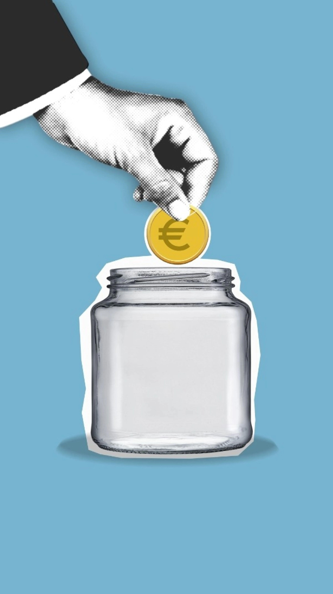

Artigos que ensinam.
Cuidado pessoal, disciplina e dinheiro — sempre com a explicação primeiro, a recomendação depois.
Pele oleosa não precisa de 10 passos — precisa dos certos
Por que sabonete comum piora a oleosidade, o que realmente ajuda, e como montar uma rotina de 2 minutos que funciona.
Ler artigoConsórcio imobiliário vale a pena, ou é melhor investir?
Os custos reais por trás do "sem juros", a diferença pra um financiamento SAC, e por que o custo de oportunidade costuma pesar mais do que parece.
Ler artigoInvestir só no Brasil ou também no exterior? O risco invisível
O que é o risco-Brasil, por que ele pode estar escondido dentro do seu patrimônio mesmo quando parece diversificado, e qual percentual faz sentido investir fora.
Ler artigo100% renda fixa ou carteira diversificada?
Com os juros altos, a renda fixa parece a escolha óbvia. Entenda o risco invisível de depender de um único motor de rentabilidade e quando concentrar em renda fixa realmente faz sentido.
Ler artigoPequenos gastos, grande estrago
Um café, um delivery, um cigarro. Isolados parecem nada — descubra quanto esses hábitos custam de verdade em 1, 5 ou 10 anos, e como calibrar sem cortar tudo.
Ler artigoCortar gastos ou aumentar a renda?
Economizar centavos ou focar em ganhar mais? Descubra qual dos dois motores da riqueza é o seu real limitador hoje, com simulação de 5 anos.
Ler artigoOnde guardar a reserva de emergência?
Poupança, CDB ou Tesouro Selic? Entenda os três critérios que realmente importam antes de escolher onde deixar seu colchão de segurança.
Ler artigo
Reserva de emergência: quanto guardar?
3, 6 ou 12 meses? Descubra o tamanho certo da sua reserva de acordo com seu perfil de renda e por que calcular pelos gastos essenciais é mais preciso que pelo salário.
Ler artigoComo evitar o emburrecimento na era dos smartphones
O impacto invisível das redes sociais e da rolagem infinita no cérebro, e um guia prático pra resgatar a clareza mental e o foco profundo.
Ler artigoPor que você não consegue se concentrar?
A epidemia moderna de desatenção sob a ótica da neurociência: o impacto do sono, a inflamação corporal e a ilusão de performance com estimulantes.
Ler artigoComo curar (rápido) sua procrastinação
A neurobiologia por trás do hábito de adiar, a armadilha do perfeccionismo e ferramentas práticas pra retomar a produtividade.
Ler artigoO protocolo de desintoxicação de dopamina
Como recalibrar o cérebro, restaurar o foco e recuperar o controle sobre os impulsos — a ciência da dopamina e um roteiro prático em 3 fases.
Ler artigo4 hábitos matinais que mudam o dia inteiro
A neurobiologia por trás de uma rotina de foco de verdade — sem banho de gelo às 4h, só ciência básica de exercício, luz, leitura e ambiente.
Ler artigoO poder do tempo nos juros compostos
Por que os primeiros R$ 100 mil são a parte mais difícil, quanto custa adiar 10 anos os seus aportes, e por que o tempo pesa mais do que a taxa.
Ler artigoJuros compostos nas dívidas: o inimigo que você mesmo cria
A mesma matemática que multiplica investimento também multiplica dívida. Entenda o rotativo, a armadilha do pagamento mínimo e como desarmar essa bola de neve.
Ler artigoPróximo artigo
Estamos escrevendo o próximo. Volte em breve pra conferir.